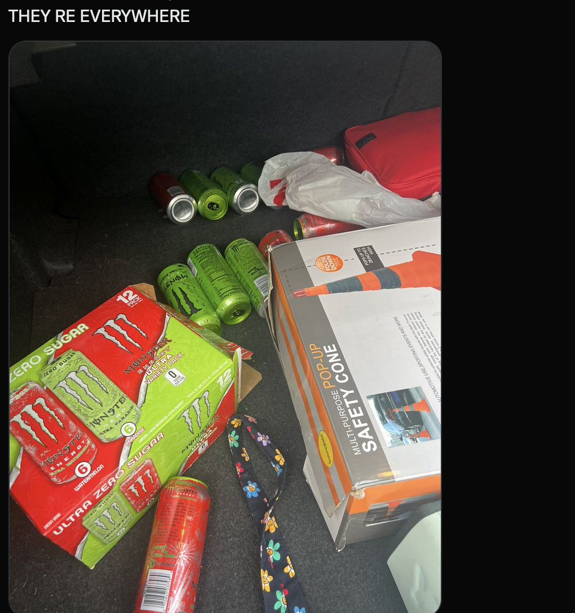

jan 30 2022
exam results + other musings
i got an A on my ap mech exam! also like a C on my (calc ab) math exam. whatever. pure math is for losers. applied mathematics changes the WORLD!!!!
also. i didn't study for math lol :)
i finally got all my university application results back. 4 acceptances, 3 deferrals, and 2 rejections. unfortunately i was rejected from my dream school of umich :(
i'm probably going to penn state for data science.
when thinking about university, i have to think about how i will run soupy with a new computer. because i had to wipe my current laptop, this will be the third iteration of software used to run soupy!
my current idea is to replace vscode with nvim. this is mostly because i can't find a vscode theme that matches my kitty theme identitically, and i'm too lazy to make one. however, i really like vscode. nvim is fine but honestly i don't need to be a tech bro who does everything in the terminal. it's 2023!
ok that's it for now, bye :3
jan 22 2023
monster energy
monster energy is in my veins every day i wake up and idrink monster energy oh my god. Once i bought a 12 pack of monster energy and they just like broke out of the box and all the cans were all over my car they tried to escape i was fucking sobbing bhysterically i still am thinking about it.

midterms are driving me crazy. im going crazy. thanks everypony for watching
ive been SO obsessed with of montreal lately. my lastfm is like 90% of montreal rn.
jan 18 2023
nationalism in wwi
studying for midterms is
actually sucking the life out of me. all i can think about is how i can't wait for university.
i made a cohost!
i don't really know what to do with it..
jan 14 2023
nvm
re my last entry: i managed to escape covid!! i'm pretty happy about it, because it causes my RA to flare up. also, my parents would probably not be happy with you know. getting it again. my dad has some pretty long-lasting effects from when i got covid in april 22, so we don't want to risk going through that shit again. but anyways, that's the best news of my week. no news.
i keep getting into universities and i keep trying to care, but i can't. :). does it really matter? not to me, not right now. i feel as though i don't exist, they're just pushing emails to a bot that wrote applications on its own. like i'm some sort of spam, junk mail, a scam that they've fallen for. i could be a good scam artist.
i started bojack horseman finally. i know, it's like, 'how have you never seen bojack horseman' but im just getting around to it now cuz idk i needed to be in the perfect mode and this is it. i quote it all the time so i may as well fuckin watch it lol. i know a lot of points (i was obsessed with sarah lynn briefly) from the plot but not how they connect so the story is still new to me despite the spoilers.
have a good weekend everybody! in the united states, it's a long weekend to celebrate mlk jr's birthday and i get to study for my ridiculously timed midterms. so excited (nawwwt).
jan 12 2023
ehhhhhh
anyways..
my friend has covid so ill probably have it too which sucks. this'll be the second time.
jan 11 2023
&
here's the thing they don't consider
you would do it too, given the chance.
jan 7 2023
log
sorted music alphabetically by artist. hopefully it's correct, i'm pretty dyslexic so
zzz
jan 6 2023
head
finished the introduction to my "ai art is not art" paper. then the due date got extended.
accidentally broke the github link by making the repo private but it's good now.
jan 5 2023
untitled
bored at school. i have to work on my senior thesis paper instead of coding which makes me sad. drank too much caffiene.
last night i finally started on my music page so
here's a secret preview before i post it to main :)
jan 4 2023
me again
i'm adding a bunch of stuff to this website. i guess i only have inspiration in the early months of the year lol.
i can't figure out a consistent theme for this website. maybe it's because all the colors are different? should i all change them to the green?
my vscode folder is a mess. how do i organize any of this
jan 4 2023
a new soup
hellooo!!! hopefully this diary lasts longer than the last one.
for this diary, i created a more streamlined
entry addition tool that will prevent me from iframe hell.
about me....i am almost done with high school! i have an acceptance into university for data science, and i am very excited to attend. i've been listing off things that i won't miss when i go to university.
super firewalled wifi
people i've known for ever
weirdly timed midterms...
uniforms! oh my god
the long commute by car
low amount of resources for STEM.
and there's a lot more but i can't list them all. well! thank you for reading. this is more of a test entry than anything :)
↓